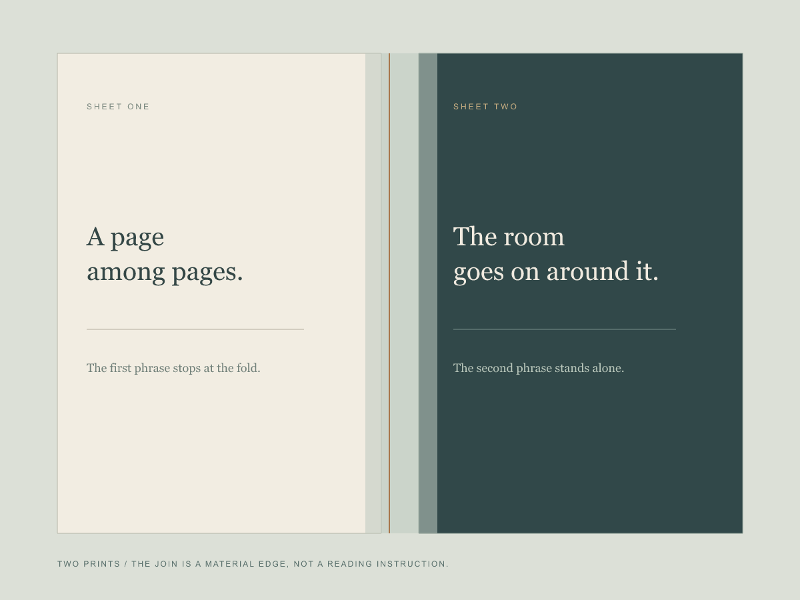

The sentence is split across two sheets: "A page among pages" on pale paper; "The room goes on around it" on dark paper. A translucent band occupies the gap but does not bridge the words. Together they make a pair; either can also stand alone.
The sheets are digitally composed and have not been printed or installed in a real room. The text is authored, not a report about a room or visitor; no viewer encounter is claimed.